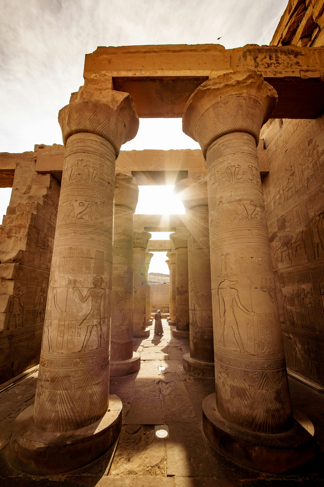

Egypt Cultural Taboos
Do Not Wear Revealing or Inappropriate Clothing in Public
Modest attire in Egypt is considered a sign of respect for Islamic traditions and practices. It is recommended to dress conservatively, especially in visiting religious sites such as mosques, churches, and temples. Women have to cover shoulders, chest, and legs, and wear loose-fitting clothing. Men have to wear long pants and shirts to cover their shoulders.
Do Not Salt Food
It is uncommon to salt food in Egypt as it is considered 'unnecessary'.
Avoid Eating Shared Food with Left Hand
In Egypt, most people eat with right hand. It is considered that the left hand is reserved for personal hygiene. Therefore, it is unhygienic.
Offensive to Offer Pork to Muslims
It is offensive to offer Muslims pork as products relating to pigs are prohibited in Islamic religion.
Avoid Giving Flowers as A Gift
As in other cultures, flowers as a gift are only given in some occasions. In Egypt, are meant for weddings, for the ill, or for periods of mourning.
Do Not Show Too Much Public Display of Affection
In Egypt, public displays of affection are considered disrespectful because the culture in Egypt is more conservative and traditional. For example, hugging and kissing in public is uncommon in Egypt.

Do Not Take Pictures of Locals Without Permission
In Egypt, and other countries individual privacy is important. With that being said, taking photographs of locals without their permission can be a sign of disrespect. It can also be consider harassment, and make some locals feel uncomfortable.
Do Not Climb on Ancient Artifacts, Pyramids, or Tombs
There are two reasons to not climbs on ancient structures. First, the ancient structures in Egypt are delicate and it is essential to handle them with care. Secondly, it can be considered disrespectful towards the Cultural Hertiage of Egypt.